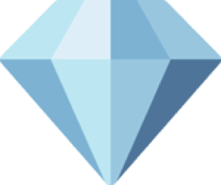

Меня зовут Александра Климова, я профессиональный имиджмейкер, стилист/физиогномист, специалист по раскрытию
потенциала личности через визуал.
В 2010г сразу после окончания МГУ им. Ломоносова (физфак и доп. образование мехмат) я открыла свое
дизайнерское ателье The 60’s в центре Москвы на Новом Арбате. Смело? Дерзко? Необычно? Однозначно да для
девушки из маленького северного городка, девочки-технаря, при этом девочки эстета и для девочки, которая
природно и потрясающе тонко чувствует стиль, имидж и визуал. Это могут подтвердить на 100% все клиенты
ателье, которые работали лично со мной как с главным модельером ателье.

Откуда у меня знания и опыт в этой области? Сначала я создала компанию, наняла лучших сотрудников
(модельеры-конструкторы и портные), слушала их и наблюдала, много наблюдала за каждым их шагом. С момента
открытия ателье я сотрудничала с лучшими имиджмейкерами и имидж-студиями Москвы, а с Европейской академией
имиджа Ольги Яковлевой у нас вообще был коллаб, и мы снимали одно помещение на Остоженке. Я прошла также
личное обучение имиджелогии у топового имиджмейкера Марии Луговой, искренне считаю ее своей наставницей в
этой области.
Я изучала все темы имиджелогии и индивидуального стиля, копала глубоко со свойственным мне сильным и весьма
научным логично-аналитическим мышлением. И какой бы системой я не пользовалась, везде было противоречие и не
было ответа на вопрос, а какие цвета, ткани и стиль подходят лично мне? Да, я не подходила ни под один типаж
из известных: мне говорили, что мне не идет фиолетовый, а фиолетовый блестящий мне очень даже к лицу, мне
говорили, что мне идет зеленый, но он мне подходит только с разводами или с рисунком, с тканями и силуэтами
тоже однозначного ответа мне никто не давал.
Я не только эстет, но еще и весы, а это знак, для которого внешний вид, эстетика и красота занимают важное
место в жизни. Одновременно с имиджелогией и стилистикой я изучала физиогномику. И нашла для себя решение,
пройдя обучение по системе академии Ларсон (США). Это система новее системы Кибби, по которой анализирует
большинство имиджмейкеров и стилистов. Эта система более точна и совершенна! Она не так популярна в России,
тк весьма сложная и трудоемкая, для ее применения нужно хорошо разбираться в физиогномике и тонко «видеть»
черты лица человека и линии его тела. Но и на этом я не остановилась.
Использовав свой 13-летний опыт работы модельером в ателье, мои знания фигуры человека, его особенностей,
всех систем имиджелогии и стилистики, применяя обучение по Ларсон, я разработала свою систему анализа
внешности человека – систему дизайна вашего визуала Visual design.
Использовав свой 13-летний опыт работы модельером в ателье, мои знания фигуры человека, его особенностей,
всех систем имиджелогии и стилистики, применяя обучение по Ларсон, я разработала свою систему анализа
внешности человека – систему дизайна вашего визуала Visual design.
Еще в 2018г я сделала ребренд ателье, ателье GRACE couture работает с гардеробом клиента исключительно
индивидуально под запрос: минимализм, классика, роскошь, красота в каждой детали и потрясающего качества
материалы и выполненная работа - мы выросли во всех смыслах.
У меня подрастает двое замечательных детей, мальчик и девочка, которые также являются моими учителями, и
помогают развивать одну из моих граней – Романтика. Кстати, перед вами весьма прокаченный тройной типаж
Гамин-Романтик-Натурал, в данный момент я работаю над развитием еще одной своей грани Драматика, но об этом
уже на личных консультациях, обучениях, мастер-классах и лекциях.
Буду рада видеть вас среди моих клиентов и показать вам, какая Вы многогранная и интересная личность!